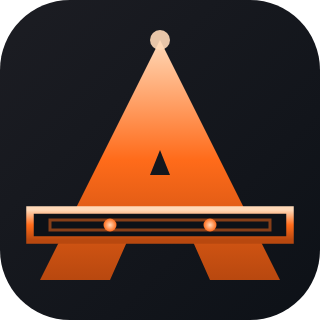

Three nested A silhouettes as fluid flow fronts (laminar→transition→turbulent). Stroke widths and opacities cascade inward. Flow arrowhead on inner A + circulation particle cluster. Most literal "fluid" reading.

Filled A silhouette in gradient orange, bisected by a horizontal pipe band with two flow dots inside. Apex highlight. Negative-space A as the brand letter. Most industrial / engineering-blueprint vibe.
Stylized A traced by curved strokes (cubic Bezier legs) — suggests centrifugal pump impeller + vortex shedding. Twin terminal dots at base = flow inlet/outlet. Most minimal & fluid-dynamic.
Stylized water droplet (teardrop) with negative-space A cut out of the center. Subtle glassmorphism highlight on upper-left. Most recognizable as "fluid" but loses the technical/engineering feel.